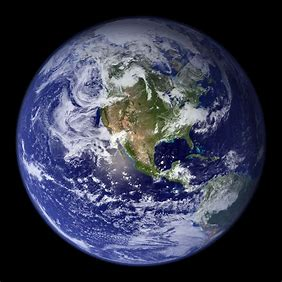
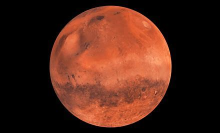
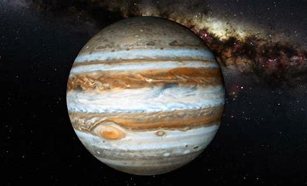

The astronomical observation has been made over the centuries. The heliocentric model on the solar system had been proposed by Nicolaus Copernicus. Then it was improved with elliptical orbit by Johannes Kepler. Then the theory of gravity was proposed by Isaac Newton.
Then the scientists realize that the Milky Way is the galaxy composed of billions of stars and solar system. Another improvement is seen when the people realize that there are many galaxies.There is an assumption that there is no center or edge on the cosmos or universe. The distribution of galaxies is in similar directions.
The theory which describes the development of the universe is the Big Bang Theory. It is one of the most accepted the cosmological models. The density of the energy and matter reduces when the space expands. In this theory, space and time are very important.The age of the universe is estimated around 13.799±0.021 billion years. The experts are still speculating about the ultimate fate of cosmos or universe.
This is what scientists thought the big bang would have looked like:
Here are some videos for you to watch...
So what did you learn?(That is just a rhetorical question!)
Our Solar System
The Solar System formed 4.6 billion years ago from the gravitational collapse of a giant interstellar molecular cloud. The vast majority of the system's mass is in the Sun, with the majority of the remaining mass contained in Jupiter. The four smaller inner system planets, Mercury, Venus, Earth and Mars, are terrestrial planets, being primarily composed of rock and metal. The four outer system planets are giant planets, being substantially more massive than the terrestrials. The two largest planets, Jupiter and Saturn, are gas giants, being composed mainly of hydrogen and helium; the two outermost planets, Uranus and Neptune, are ice giants, being composed mostly of substances with relatively high melting points compared with hydrogen and helium, called volatiles, such as water, ammonia and methane. All eight planets have almost circular orbits that lie within a nearly flat disc called the ecliptic.
The asteroid belt, which lies between the orbits of Mars and Jupiter, mostly contains objects composed, like the terrestrial planets, of rock and metal. Beyond Neptune's orbit lie the Kuiper belt and scattered disc, which are populations of trans-Neptunian objects composed mostly of ices, and beyond them a newly discovered population of sednoids. Within these populations, some objects are large enough to have rounded under their own gravity, though there is considerable debate as to how many there will prove to be. Such objects are categorized as dwarf planets. The only certain dwarf planet is Pluto, with another trans-Neptunian object, Eris, expected to be, and the asteroid Ceres at least close to being a dwarf planet. In addition to these two regions, various other small-body populations, including comets, centaurs and interplanetary dust clouds, freely travel between regions. Six of the planets, the six largest possible dwarf planets, and many of the smaller bodies are orbited by natural satellites, usually termed "moons" after the Moon. Each of the outer planets is encircled by planetary rings of dust and other small objects.
Look below at the picture...
Video about The Solar System
Lets go through every planet, one by one...
Mercury
Mercury is both the smallest planet in our solar system and the closest to the sun. It can be seen from Earth near the horizon at dawn or dusk and can easily be mistaken for a distant star. Not much larger than Earth’s moon, Mercury completes its orbit in about 88 Earth days.The temperature during the day can reach 840 degrees Fahrenheit (450 degrees Celsius), but at night, temperatures can get as low as minus 275 F (minus 170 C).
Mercury:
Venus
Venus, the second planet from the sun, is the closest planet to Earth and one of the brightest objects we see in the sky. It is sometimes referred to as Earth's 'sister planet' because of their similar size, mass, composition, and proximity to the sun. It spins slowly in the opposite direction than most planets.Venus is a terrestrial planet and is sometimes called Earth's "sister planet" because of their similar size, mass, proximity to the Sun, and bulk composition.
Venus:
Earth
Earth is the third planet from the sun, and the only place we know of so far that’s inhabited by living things. It is the only world in our solar system with liquid water on the surface. Slightly larger than nearby Venus, Earth is the biggest of the four planets closest to the sun, all of which are made of rock and metal.Earth's atmosphere is 78 percent nitrogen, 21 percent oxygen and 1 percent other ingredients—the perfect balance to breathe and live.
Earth:

Mars
Mars, the fourth planet from the sun, is a dusty, cold, desert world with a thin atmosphere. This dynamic planet has seasons, polar ice caps, extinct volcanoes, canyons, and weather. One of the most explored bodies in the solar system, Mars is the only planet where we've sent rovers to roam the alien landscape.Gravity on Mars is 38 percent of Earth's gravity, so a 100-pound person on Earth would weigh 38 pounds on Mars.
Mars:

Jupiter
Jupiter, the fifth planet from the sun, is the largest planet in our solar system. After the Moon and Venus, it's usually the next brightest object in the night sky. This gas giant, made mostly of hydrogen and helium, is easily recognized by its alternating dark belts and light zones as well as the Great Red Spot, a storm larger than the Earth.Jupiter has the shortest day of all the planets. It turns on its axis once every 9 hours and 55 minutes.
Jupiter:

Saturn
Saturn, the sixth planet from the sun, is the second-largest planet in our solar system by mass and size and the most distant planet easily visible to the unaided eye from Earth. This gas giant made mostly of hydrogen and helium is easily recognized by its yellowish color, magnificent rings, and oblate—or flattened at the poles—shape.The rings of Saturn are the most extensive ring system of any planet in the Solar System.
Saturn:
Uranus
Uranus is the seventh planet from the sun. It has the third-largest radius of all the planets. It has 13 faint rings and 27 small moons. But a characteristic that sets Uranus apart: It spins on its side as it orbits the sun. That trip takes about 84 Earth years. At its brightest, Uranus is just visible to the unaided eye as a blue-green point of light.
Uranus:
Neptune
Neptune, the eighth planet from the sun, is the fourth largest planet in the solar system, but because it is so far away, it is not visible to the naked eye. Images from Voyager 1 show a vibrant blue Neptune with 14 moons, including its largest moon, Triton, discovered just 17 days after Neptune was first documented in 1846.It is the fourth-largest planet by diameter, the third-most-massive planet, and the densest giant planet.